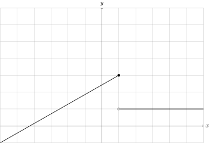
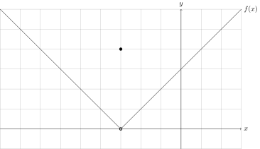

3.1
Pengantar Notasi Limit
Definisi 3.1.1.
Jika nilai-nilai $f(x)$ dapat dibawa sedekat mungkin ke $L$ dengan
membawa nilai-nilai $x$ sangat dekat ke $a$ (tetapi tidak sama dengan
$a$), maka dapat ditulis \begin{align} \lim_{x\to a} f(x)=L
\end{align} $$$$ dibaca "limit dari $f(x)$ saat $x$ mendekati $a$
adalah $L$" atau "$f(x)$ mendekati $L$ saat $x$ mendekati $a$". Bentuk
$(1)$ dapat juga ditulis sebagai $$f(x)\to L\quad\text{untuk}\quad
x\to a.$$
Definisi 3.1.2.
Limit dua-sisi untuk suatu fungsi $f(x)$ \textbf{ada} di $a$ jika dan
hanya jika limit satu-sisi di $a$ (dari kanan dan dari kiri) untuk
$f(x)$ ada dan mempunyai \textbf{nilai sama}, yaitu: \begin{center}
$\lim_{x\to a} f(x)=L$ (ada) jika dan hanya jika $\lim_{x\to a^-}
f(x)=L=\lim_{x\to a^+} f(x)$ (ada). \end{center}
Definisi 3.1.3.
Jika nilai-nilai fungsi $f(x)$ dapat dibawa sedekat mungkin menuju
$L$, dengan mendekatkan nilai-nilai $x$ sedekat mungkin ke $a$ (tetapi
lebih besar dari $a$), maka dapat ditulis \begin{align} \lim_{x\to
a^+}f(x)=L \end{align} dan jika nilai-nilai fungsi $f(x)$ dapat dibawa
sedekat mungkin menuju $L$, dengan mendekatkan nilai-nilai $x$ sedekat
mungkin ke $a$ (tetapi lebih kecil dari $a$), maka dapat ditulis
\begin{align} \lim_{x\to a^-}f(x)=L. \end{align} Bentuk $(2)$ dibaca
"limit $f$ untuk $x$ mendekati $a$ dari kanan adalah $L$" atau "$f(x)$
mendekati $L$ saat $x$ mendekati $a$ dari kanan". Sedangkan bentuk
$(3)$ dibaca "limit $f$ untuk $x$ mendekati $a$ dari kiri adalah $L$"
atau "$f(x)$ mendekati $L$ saat $x$ mendekati $a$ dari kiri".
Contoh 1
Dengan menggunakan gambaran limit, dapatkan kemiringan garis singgung
pada kurva $y=3-x^2$ di titik $(1,2)$.
Pembahasan
Misalkan suatu titik $(x,3-x^2)$ pada kurva dan $l$ garis potong
kurva $y=3-x^2$ yang menghubungkan titik $(1,2)$ dengan
$(x,3-x^2)$. $$m_l=\frac{f(x)-f(1)}{x-1}$$ Asumsikan titik
$(x,3-x^2)$ bergerak mendekati $(1,2)$ hingga $$x\to 1\implies
|x-1|\to 0$$ $$f(x)\to f(1) \implies |f(x)-f(1)|\to 0$$ Dengan
demikian, garis singgung mendekati garis $l$ dan kemiringan garis
singgung, misalkan $m_{gs}$, dapat dihitung dengan melimitkan
$m_l$. \begin{align*} m_l&=\frac{3-x^2-(3-1^2)}{x-1}\\
&=\frac{3-x^2-(3-1)}{x-1}\\ &=\frac{3-x^2-2}{x-1}\\
&=\frac{1-x^2}{x-1}\\ &=\frac{-(x^2-1)}{x-1}\\
&=\frac{-(x-1)(x+1)}{x-1}\\ m_l&=-(x+1) \end{align*} Ketika nilai
$x$ mendekati $1$, nilai $m_l$ mendekati $-2$ sehingga
$m_{gs}=-2$.
Contoh 2
Grafik fungsi $g$ digambarkan berikut ini.

Dapatkan:- $\displaystyle \lim_{x\to 1^-}g(x)$.
- $\displaystyle \lim_{x\to 1^+}g(x)$.
- $\displaystyle \lim_{x\to 1}g(x)$.
- $g(1)$.
Pembahasan
- Berdasarkan gambar, terlihat bahwa ketika $x$ mendekati $1$ dari kiri, maka $y$ mendekati $3$ sehingga $$\displaystyle \lim_{x\to 1^-}g(x)=3.$$
- Berdasarkan gambar, terlihat bahwa ketika $x$ mendekati $1$ dari kanan, maka $y$ mendekati $1$ sehingga $$\displaystyle \lim_{x\to 1^+}g(x)=1.$$
- Dari poin $(a)$ dan $(b)$, diperoleh bahwa $\displaystyle \lim_{x\to 1^-}g(x)\neq\lim_{x\to 1^+}g(x)$ sehingga $\displaystyle \lim_{x\to 1}g(x)$ tidak ada.
- Berdasarkan gambar, terlihat bahwa $g$ terdefinisi pada $(1,3)$ sehingga $g(1)=3$.
Latihan!
Grafik fungsi $g$ diberikan pada gambar berikut.

Dapatkan nilai $a$, $b$, dan $c$ jika nilai $\displaystyle \lim_{x\to -3^-}g(x)=a$, $\displaystyle \lim_{x\to -3^+}g(x)=b$, dan $\displaystyle \lim_{x\to -3}g(x)=c$.
Jawab:
EAS 2024/2025
Diberikan kurva $xy+x+y+4=0$. Dapatkan persamaan garis singgung
kurva tersebut pada $x=1$.
Jawab: